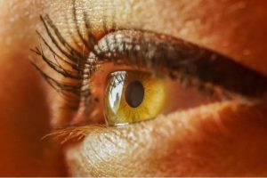

PRIMERA MENTORÍA

Visión y su profundidad
Hay que recalcar que tuve un cambio de mentor al comienzo del año de 2024 por eso que haya podido aprender distintas con un mentor que con la otra.
¿Qué se llegó a ver en esta primera mentoría?
Lógicamente primero me presente quién era y como era mi entorno, también mi anterior mentora, llamada Cecilia, se presentó quien era y lo que le gustaba y más cosas.
Temas principales que vimos
- Principalmente lo que vimos era todo lo relacionado con la visión y con la profundidad, para ello me puso un ejemplo de que mirase a través de la ventana y le contara que veía, y le contaba que había un campo de fútbol, un restaurante, una carretera al fondo... etc. Luego me dijo que mirase más en concreto la propia ventana y me preguntó otra vez que veía, y le contaba que principalmente encontré manchas y polvo.
- Con el ejemplo que he mencionado anteriormente me explicó, de manera básica y general, lo que era la visión y la profundidad, que me puso también otro ejemplo lo de oír o escuchar que son cosas distintas ya que cuando escuchas algo significa que le prestas atención y normalmente recuerdas lo que te dijo, mientras que lo otro normalmente se nos olvida al segundo de que nos lo haya dicho.
- Principalmente de los ejemplos que me puso ella me quede con dos cosas, una con la visión propia que algunas veces llamamos cualquier cosa que vemos una visión y que nunca se llega a ver con mucho ímpetu, hablando de ímpetu llegamos a la otra cosa con lo que me quede y es que nos cuesta mucho poner atención a las cosas y nos cuesta pararnos un segundo y ver las cosas con cierta profundidad.
- Ahora me centraré un poquito de los ejercicios que me mandó después de la mentoría, sé que puede llegar a considerarse parte de la segunda mentoría, pero, quería recalcar algún que otra cosa cuando me explicaba que debía hacer.
- Primero fue hacer el cuaderno de bitácora, que no lo pude hacer antes, y me di cuenta que ahí tomas apuntes de las cosas y todo, y es verdad que ahora más que un cuaderno parece un archivo porque ahí voy metiendo todo lo que tenga que ver con las mentorías.
- Lo segundo fue que había que hacer eso de lo de la acción CRECER y me sorprendió mucho eso porque aunque soy de imaginarme mucho como sería las cosas, nunca llegué a pensar que había que hacer un seguimiento de esa manera, me refiero, pensaba que la mentoría sería ese momento con el mentor,
haces los deberes que debes de hacer y ya, pero no, porque el concepto es mejorar tu vida y por eso me parece una buena idea ese concepto que hicieron.